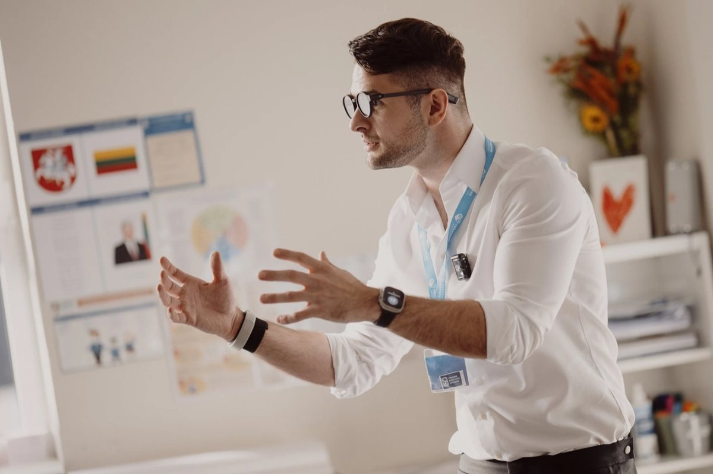

Kris Vas · Mokymosi klubas #1 · 2026-11
Mokyklos riboja telefonus. Ką daryti namie?
Viskas, kas netilpo į laišką. Pradėk nuo garso arba nuo taisyklių.
🎧 Klausyk📋 Taisyklės👧 Pagal amžių🎬 Video ir karuselės📊 Duomenys📎 Šaltiniai

Šį rudenį mokyklose kalbu apie vaikus ir telefonus
🎧 Klausyk (3 min.)
Tai mano balso klonas, ne įrašas gyvai. Sukurtas su ElevenLabs. Tarimas gali kur nors šlubuoti.
Tekstas
Labas, mamos ir tėčiai. Čia Kris. Tiksliau, mano balso klonas. Tai pirmas Mokymosi klubas.
Spalį Riešėje paklausiau tėvų ir mokytojų: tu kalbi, žmogus priešais išsitraukia telefoną. Ką jauti? Dvylika iš penkiolikos atsakė: kad nesu svarbus.
Apie vaiką restorane su ausinėmis ir iPadu padariau trumpą video. Instagrame jį pažiūrėjo beveik du šimtai tūkstančių kartų. Su Facebook ir TikTok jau apie pusę milijono peržiūrų. O karuselę, ką daryti vietoj telefono, išsisaugojo šimtas aštuoniasdešimt keturi žmonės. Spalį apie telefonus prie stalo ir vaikų nuobodulį kalbėjau LRT laidoje Žmonės klausia. Baimės jau gana. Tėvai klausia, ką daryti.
Pats šitą kovą ilgai pralaimėjau. ADHD ir telefonas yra pavojinga pora. Tada įjungiau pilką ekraną, ir telefono nebesinori pakelti taip dažnai. Todėl nuo šiandien šis laiškas yra Mokymosi klubas. Viena tema, tikri skaičiai ir trys dalykai namams pagal vaiko amžių. Tai nemokamas laiškas tėvams, jokių susitikimų.
Jei vaikui trys, keturi, penki ar šeši metai, mokyklos tvarka tavęs dar neliečia, gali šią dalį praleisti. Pasaulis juda viena kryptimi. Du tūkstančiai dvidešimt trečiais metais telefonus mokyklose ribojo mažiau nei kas ketvirta šalis. Šių metų kovo mėnesį UNESCO suskaičiavo jau apie penkiasdešimt aštuonis procentus švietimo sistemų. Lietuvoje nuo rugsėjo pirmosios kiekviena mokykla privalo turėti savo telefonų tvarką.
Šiemet JAV tyrėjai patikrino, ar tai padeda: palygino mokyklas, kurios telefonus užrakina dėkluose, su panašiomis mokyklomis be dėklų. Telefonų mokykloje gerokai mažiau. Testų rezultatai beveik nepasikeitė. Pirmais metais savijauta suprastėjo, vėliau tai praėjo. Trečiais metais savijauta jau geresnė. Anglijoje griežtesnės tvarkos mokyklose vaikai telefonu naudojosi apie keturiasdešimt minučių per dieną mažiau, bet tik pačioje mokykloje. Miegas, pažymiai ir savijauta nuo laisvesnių mokyklų nesiskyrė.
Mano išvada: draudimas sumažina telefono laiką mokykloje. Įpročiai gyvena namie.
Todėl trys taisyklės iš mano Technologijų etiketo.
Pirma. Stalas be telefonų. Lengviausia pradžia. Valgot kartu, telefonai ilsisi kitame kambaryje. Tavo irgi. Su mažyliais restorane vietoj planšetės sąsiuvinis ir pieštukai. Su pradinukais vaikas surenka visų telefonus į dėžę. Su paaugliu taisyklę rašot kartu, ir jis gali ją priminti tau. Dirbi pamainomis? Užtenka vieno bendro valgio per savaitę.
Antra. Telefonai miega ne miegamajame. Čia sunkiausia. Kraunam virtuvėje, ne prie lovos. Visi, ir suaugę. Telefonas žadintuvas? Tiks paprastas laikrodis. Dirbi naktimis? Pradėk nuo vienos laisvos nakties. Planšetė nuo pradžių gyvena ne vaiko kambaryje. Pirmas telefonas ateina kartu su šia taisykle. O su paaugliu tavo telefonas į virtuvę keliauja pirmas.
Trečia. Pasakyk, kai padėjo dirbtinis intelektas. Mažyliui robotą ir balso asistentą vadink mašina. Ji nejaučia. Pradinukas pirma bando pats, tada klausiat kartu ir tikrinat. Paauglys pasako tau ar mokytojui, kur padėjo dirbtinis intelektas ir ką padarė pats.
Vaikas su ADHD ar disleksija? Pradėk tik nuo stalo. Kitą taisyklę pridėk, kai pirma prigis.
Šį vakarą vakarienė be telefonų. Šiąnakt savo telefoną palik krautis virtuvėje. Ir paklausk vaiko: kada nori, kad padėčiau telefoną?
Atvirai: esu Robotikos akademijos, BrAIn Club ir ExoClass bendraįkūrėjas. Mūsų būreliuose telefonų nėra, todėl šia tema esu šališkas.
Kuri taisyklė tavo namuose sunkiausia? Užtenka vieno paspaudimo laiške. Ačiū, kad esi čia. Iki kito laiško.
Kas tas Mokymosi klubas
Nuo šiol šis laiškas yra klubas. Viena tema, tikri skaičiai ir trys dalykai namams pagal vaiko amžių. Tikslas: sveiki vaiko santykiai su telefonu, planšete, robotu ir DI (AI). Tai nemokamas laiškas tėvams, jokių susitikimų.
📋 Visos 10 taisyklių
Technologijų etiketas yra mano „stalo etiketas" technologijoms. Išsirink kelias, įrašyk savo Nr. 1, pakabink ant šaldytuvo. Pasirašo visi, ir tėvai.
👧 Trys taisyklės pagal amžių
| 3–6 m. | 7–12 m. | 13–17 m. | |
|---|---|---|---|
| Stalas be telefonų | Restorane vietoj planšetės sąsiuvinis ir pieštukai | Vaikas surenka visų telefonus į dėžę | Taisyklę rašot kartu. Jis gali ją priminti ir tau |
| Telefonai miega ne miegamajame | Planšetė nuo pradžių gyvena ne vaiko kambaryje | Pirmas telefonas ateina kartu su šia taisykle | Tavo telefonas į virtuvę keliauja pirmas |
| Pasakyk, kai padėjo DI | Su robotu ar balso asistentu sakyk „mašina". Ji nejaučia | Pirma bando pats, tada klausiat DI kartu ir tikrinat | Pasako tau ar mokytojui, kur padėjo DI ir ką padarė pats |
DI įrankiai savarankiškai rekomenduojami nuo 13 m. (UNESCO 2023). Jaunesni vaikai juos naudoja su suaugusiu.
Vaikas su ADHD ar disleksija? Pradėk tik nuo stalo. Kitą taisyklę pridėk, kai pirma prigis.
🎬 Video ir karuselės, kurias tėvai rinkosi labiausiai
Instagram 198 058 peržiūros · 2 128 pasidalijimai. Žiūrėti →
Pokalbis su Sandra Vilimaite, 2026-10-26. Žiūrėti →
Facebook, apie 205 tūkst. peržiūrų. Žiūrėti →
Instagram 42 929 peržiūros · 584 pasidalijimai · 326 išsaugojimai. Žiūrėti →
Karuselė · 18 708 peržiūros · 147 pasidalijimai. Žiūrėti →
Karuselė · 17 410 peržiūrų · 184 išsaugojimai. Žiūrėti →
Karuselė · 43 839 peržiūros. Žiūrėti →
Instagram ir Facebook duomenys, 2026-11-05.
📊 Kiek žmonių pažymėjo „darysiu"
| Taisyklė | 3–6 m. | 7–12 m. | 13–17 m. |
|---|---|---|---|
| Stalas be telefonų | 75 % | 70 % | 81 % |
| Telefonai ne miegamajame | 37 % | 44 % | 36 % |
| Pasakyk, kai padėjo DI | 62 % | 68 % | 64 % |
Technologijų etiketo testas, 252 atsakymai iš mano sekėjų, 2026-10-19–11-04. Tai mano sekėjai, ne visi Lietuvos tėvai.
Atvirai
Esu Robotikos akademijos, BrAIn Club ir ExoClass bendraįkūrėjas. Mūsų būreliuose telefonų nėra, todėl šia tema esu šališkas. Taisyklės tinka kiekvienai šeimai, nesvarbu, kurį būrelį pasirinksi. Tai mano paties būreliai, jei įdomu, kaip tai atrodo pas mus: robotikosakademija.lt.
📎 Šaltiniai
- UNESCO GEM, 2026-03, per PTI: 114 švietimo sistemų, apie 58 %.
- LRT, 2026-07-29: mokyklų telefonų tvarkos.
- Allcott ir kt., NBER Working Paper 35132, 2026 · GovTech santrauka.
- Goodyear ir kt., SMART Schools, 2025: Birmingham universitetas.
- Carter ir kt., JAMA Pediatrics, 2016: įrenginiai miegamajame ir vaikų miegas. Ryšys, ne įrodyta priežastis.
Parengta su DI pagalba, šaltiniai tikrinti, bet galiu klysti. Pastabos laukiamos. Privatumas: anoniminė statistika be slapukų. Microsoft Clarity įsijungia tik paspaudus „Leisti". Privatumo politika ·